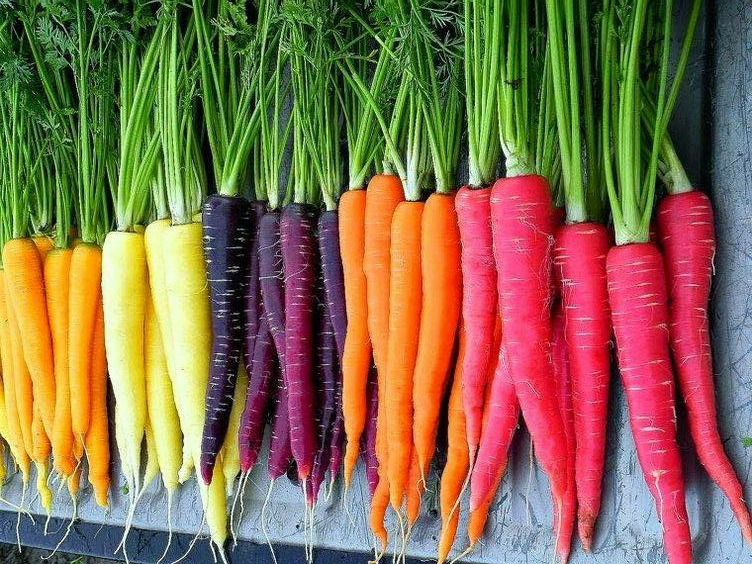

Carrots have become synonymous with rabbits over time. This association is due in part
by the popular Loony Tunes character Bugs Bunny.
However, in actuality, carrots are not the best food to feed rabbits. Not only are they high in sugar
for the rabbit, but they can also lead to tooth decay and many other health problems.
A rabbit's diet should consist mostly of hay and green vegetables. Carrots can be given in small amounts as treats.
Carrots are great for eyesight
You've probably been told before that eating carrots is good for your eyes. Unlike many sayings, this one is actually true.
Carrots contain carotene. Carotene is a red/orange pigment found in carrots and other vegetables; such as onions, spinach, and squash (sweet potatoes get their orange color from it). Though,
it is especially concentrated in carrots, which is where it got it's name from.
Once eaten, carotene is converted into vitamin A within the body. Vitamin A is essential in maintaining eye health along with many other health benefits.
Carrots come in many different colors
Many people associate carrots with the color orange. However, like many other vegetables, carrots come in more than just one color.
Of course there are plenty of different shades of orange for carrots. But there are also yellow, white, pink, and even purple carrots.

Does that mean that they have less carotene since they aren't orange? Not exactly. Lighter colored carrots do have less carotene. However, the darker the color of carrot the more carotene it has!
Why are orange carrots the most common?
Why are most carrots we see in grocery stores orange when there are so many different colors to choose from? You may assume we almost exclusively grow orange
carrots because they are the hardiest, or the easiest to grow, or maybe they tasted the best. However, the actual reason is more silly than practical. It's thought to be all thanks to one person.
This guy.
It is believed that orange carrots came about from Dutch farmers selectively breeding carrots until they created ones that were orange.
They did this as tribute to William of Orange. And ever since, the color has just stuck.